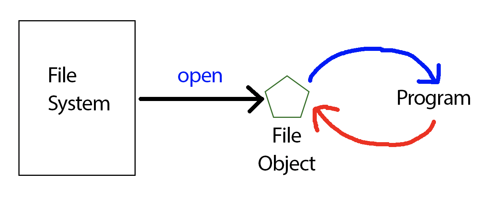

CSC 111
Introduction to Computer Science Through Programming
Smith Computer Science
Introduction to Computer Science Through Programming
Smith Computer Science
Files are collections of values saved under a known address.
Internally, they are just 0s and 1s, but they can be interpreted as different things, like ASCII characters in a text file or just as 0s and 1s in a binary file.
When we want to interact with a file, we create a file object by providing the file's path.

A file object (more on objects later) has the file's information and allows the user to make use of a series of object methods to interact with that data.
my_file = open('readme.txt')
| Mode | Description | Allow read? | Allow write? | Create missing file? | Overwrite file? |
|---|---|---|---|---|---|
| r | Open the file for reading. | Yes | No | No | No |
| w | Open the file for writing. If file does not exist then the file is created. Contents of an existing file are overwritten. | No | Yes | Yes | Yes |
| a | Open the file for appending. If file does not exist then the file is created. Writes are added to end of existing file contents. | No | Yes | Yes | No |
file_object_handle = open("example.txt") print('Reading file example.txt.') contents = file_object_handle.read() # read file text into a string print('Closing file example.txt.') file_object_handle.close() # close the file print('\nContents of example.txt:\n', contents)
# Read file contents print ('Reading in data...') f = open('example.txt') lines = f.readlines() f.close() # Iterate over each line for ln in lines: print("### {} ###".format(ln))
f = open('example.txt') for line in f: print(line, end="") f.close()
f = open("example.txt", "w") print('Opening file example.txt for writing') f.write('Joke #2: \nThe generation of random numbers is too important to be left to chance.') # Write string f.close() # Close the file f = open('example.txt') contents = f.read() print(contents) f.close()
f = open("example.txt", "a") print('Opening file example.txt for appending') f.write('Joke #1: \nThere are only 10 kinds of people in this world:\nthose who know binary and those who don’t.') # Write string f.close() # Close the file f = open('example.txt') contents = f.read() print(contents) f.close()
# Open a file for reading and appending with open('example.txt', 'r+') as f: # Read in two integers lines = f.readlines() print ("lines:\n",lines) print() print ("BEFORE:") for idx in range(len(lines)): lines[idx] = lines[idx].replace("\n", "") print(lines[idx]) print() # move line 2 to 0, 1, and 2 new_lines = [] new_lines.append(lines[2]+"\n") new_lines.append(lines[3]+"\n") new_lines.append(lines[4]+"\n") new_lines.append(lines[0]+"\n") new_lines.append(lines[1]+"\n") print ("new lines:\n",new_lines) print() # and write everything back with open('example.txt', 'w+') as f: f.writelines( new_lines ) # Open a file for reading and appending with open('example.txt', 'r+') as f: # Read in two integers lines = f.readlines() print ("AFTER:") for li in lines: li = li.replace("\n", "") print(li) print() # No need to call f.close() - f closed automatically print('Closed example.txt')
We will look at the examples we wrote in class and see how t debug using print statements and with the Replit debugger.
Check out this article on working with files